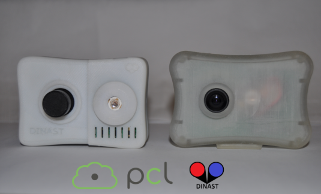
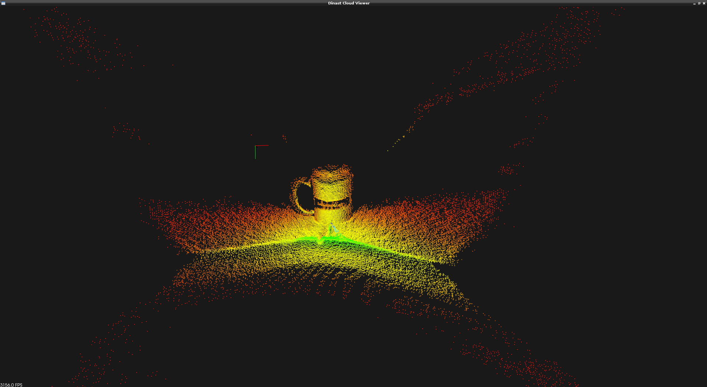

The PCL Dinast Grabber Framework
At PCL 1.7 we offer a new driver for Dinast Cameras making use of the generic grabber interface that is present since PCL 1.0. This tutorial shows, in a nutshell, how to set up the pcl grabber to obtain data from the cameras.
So far it has been currently tested with the IPA-1110, Cyclopes II and the IPA-1002 ng T-Less NG but it is meant to work properly on the rest of the Dinast devices, since manufacturer specifications has been taken into account.
{kind=link}
Small example
As the Dinast Grabber implements the generic grabber interface you will see high usage similarities with other pcl grabbers. In applications you can find a small example that contains the code required to set up a pcl::PointCloud<XYZI> callback to a Dinast camera device.
Here you can see a screenshot of the PCL Cloud Viewer showing the data from a cup laying on a table obtained through the Dinast Grabber interface:
{kind=link}
And this is a video of the PCL Cloud Viewer showing the point cloud data corresponding to a face:
Dinast Grabber currently offer this data type, as is the one currently available from Dinast devices:
void (const pcl::PointCloud<pcl::PointXYZI>::ConstPtr&)
The code
The code from apps/src/dinast_grabber_example.cpp will be used for this tutorial:
1#include <pcl/common/time.h>
2#include <pcl/io/dinast_grabber.h>
3#include <pcl/visualization/cloud_viewer.h>
4#include <pcl/point_types.h>
5
6#include <chrono>
7#include <thread>
8
9using namespace std::chrono_literals;
10
11template <typename PointType>
12class DinastProcessor {
13public:
14 using Cloud = pcl::PointCloud<PointType>;
15 using CloudConstPtr = typename Cloud::ConstPtr;
16
17 DinastProcessor(pcl::Grabber& grabber)
18 : interface(grabber), viewer("Dinast Cloud Viewer")
19 {}
20
21 void
22 cloud_cb_(CloudConstPtr cloud_cb)
23 {
24 static unsigned count = 0;
25 static double last = pcl::getTime();
26 if (++count == 30) {
27 double now = pcl::getTime();
28 std::cout << "Average framerate: " << double(count) / double(now - last) << " Hz"
29 << std::endl;
30 count = 0;
31 last = now;
32 }
33 if (!viewer.wasStopped())
34 viewer.showCloud(cloud_cb);
35 }
36
37 int
38 run()
39 {
40
41 std::function<void(const CloudConstPtr&)> f = [this](const CloudConstPtr& cloud) {
42 cloud_cb_(cloud);
43 };
44
45 boost::signals2::connection c = interface.registerCallback(f);
46
47 interface.start();
48
49 while (!viewer.wasStopped()) {
50 std::this_thread::sleep_for(1s);
51 }
52
53 interface.stop();
54
55 return 0;
56 }
57
58 pcl::Grabber& interface;
59 pcl::visualization::CloudViewer viewer;
60};
61
62int
63main()
64{
65 pcl::DinastGrabber grabber;
66 DinastProcessor<pcl::PointXYZI> v(grabber);
67 v.run();
68 return 0;
69}
The explanation
At first, when the constructor of DinastProcessor gets called, the Grabber and CloudViewer Classes are also initialized:
DinastProcessor(pcl::Grabber& grabber) : interface(grabber), viewer("Dinast Cloud Viewer") {}
At the run function what we first have is actually the callback and its registration:
std::function<void (const CloudConstPtr&)> f =
[this] (const CloudConstPtr& cloud) { cloud_cb_ (cloud); };
boost::signals2::connection c = interface.registerCallback (f);
We create a lambda object with the callback cloud_cb_, we pass an implicit copy of the DinastProcessor pointer (through this). The lambda then gets casted to a std::function object which is templated on the callback function type, in this case void (const CloudConstPtr&). The resulting function object is then registered with the DinastGrabber interface.
The registerCallback call returns a boost::signals2::connection object, which we do not use in the this example. However, if you want to interrupt or cancel one or more of the registered data streams, you can call disconnect the callback without stopping the whole grabber:
boost::signals2::connection = interface (registerCallback (f));
// ...
if (c.connected ())
c.disconnect ();
After the callback is set up we start the interface. Then we loop until the viewer is stopped. Finally interface is stopped although this is not actually needed since the destructor takes care of that.
On the callback function cloud_cb_ we just do some framerate calculations and we show the obtained point cloud through the CloudViewer.
Testing the code
We will test the grabber with the previous example. Write down the whole code to a file called dinast_grabber.cpp at your preferred location. Then add this as a CMakeLists.txt file:
1cmake_minimum_required(VERSION 2.8 FATAL_ERROR)
2
3project(dinast_grabber)
4
5find_package(PCL 1.7 REQUIRED)
6
7include_directories(${PCL_INCLUDE_DIRS})
8link_directories(${PCL_LIBRARY_DIRS})
9add_definitions(${PCL_DEFINITIONS})
10
11add_executable (dinast_grabber dinast_grabber.cpp)
12target_link_libraries (dinast_grabber ${PCL_LIBRARIES})
Then just proceed as a usual cmake compilation:
$ cd /PATH/TO/DINAST_EXAMPLE
$ mkdir build
$ cd build
$ cmake
$ make
If everything went as expected you should now have a binary to test your Dinast device. Go ahead, run it and you should be able to see the point cloud data from the camera:
$ ./dinast_grabber
Troubleshooting
Q: When I run the application I get an error similar to this one:
$ ./dinast_grabber
libusb: 0.000000 error [op_open] libusb couldn't open USB device /dev/bus/usb/002/010: Permission denied.
libusb: 0.009155 error [op_open] libusb requires write access to USB device nodes.
Where the last numbers of the /dev/bus/usb/… might vary.
A: This means you do not have permission to access the device. You can do a quick fix on the permissions of that specific device:
$ sudo chmod 666 /dev/bus/usb/002/010
Or you can make this changes permanent for all future Dinast devices writing a rule for udev. In debian-like systems it is usually done writing this:
# make dinast device mount with writing permissions (default is read only for unknown devices)
SUBSYSTEM=="usb", ATTR{idProduct}=="1402", ATTR{idVendor}=="18d1", MODE:="0666", OWNER:="root", GROUP:="video"
to a file like /etc/udev/rules.d/60-dinast-usb.rules.
If you still have problems you can always use the users mailing list: pcl-users@pointclouds.org to find some extra help.
Conclusions
With this new grabber a new kind of short-range sensors are available through the PCL Grabber interface. It is now a breeze to connect and obtain data from Dinast devices as you do with the rest of devices supported at PCL.
If you have any development suggestions on these or new devices you can contact us through pcl-developers@pointclouds.org.